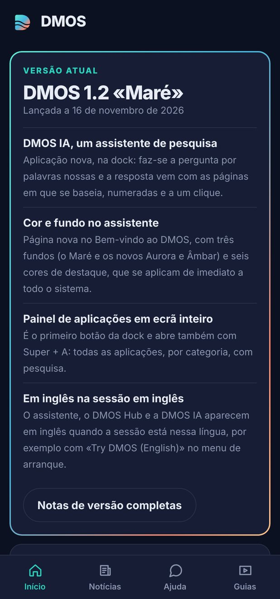
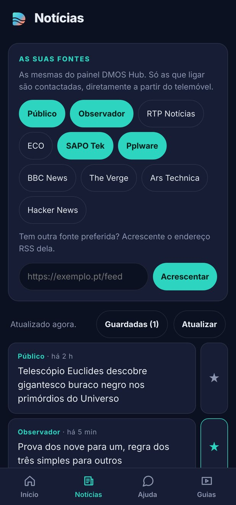
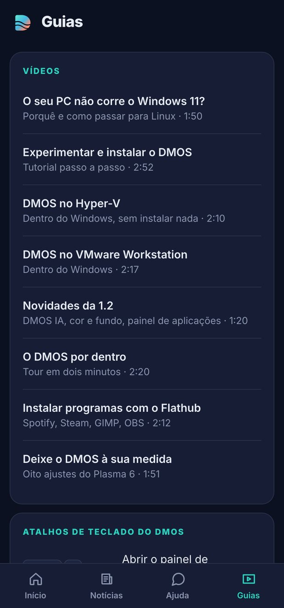

O DMOS no telemóvel.
Uma aplicação pequena para acompanhar o DMOS: as novidades de cada versão, as notícias das mesmas fontes do painel DMOS Hub, o assistente de ajuda e os guias em vídeo. Sem publicidade, sem contas e sem rastreio.
Descarregar para Android (92 KB)
Android 7 ou mais recente · só pede acesso à internet · código aberto
Tem um iPhone ou um iPad? Há uma versão para iOS, com uma instalação diferente.

O que faz
Novidades e descarga
A versão atual do DMOS e o que traz. A ligação de descarga envia-se para o computador com um toque, com o código de verificação da ISO.
Notícias, as suas
As dez fontes do DMOS Hub e as que acrescentar, com qualquer endereço RSS. Só as fontes que ligar são contactadas, diretamente do telemóvel.
Ajuda à mão
O assistente responde com as perguntas frequentes do projeto, mesmo sem rede, e leva a pergunta para a comunidade quando não sabe.
Guias e atalhos
Os tutoriais em vídeo e os atalhos de teclado do DMOS, para ter ao lado enquanto instala ou usa o sistema.
Como é


Como instalar no Android
A aplicação não está na Google Play: instala-se a partir do ficheiro. O Android pede uma autorização, uma só vez.
- No telemóvel, carregue em Descarregar para Android e abra o ficheiro quando a transferência terminar.
- O Android avisa que, por segurança, não instala aplicações desta origem. Carregue em Definições e ligue Permitir desta fonte para o navegador que está a usar.
- Volte atrás e carregue em Instalar.
Se o Play Protect perguntar se quer analisar a aplicação, pode aceitar: é uma verificação normal para aplicações de fora da loja.
iPhone e iPad
A mesma aplicação, feita para o iOS 15 ou mais recente. Não está na App Store, e a Apple não deixa instalar uma aplicação só com o ficheiro, como no Android: o ficheiro tem de ser assinado com uma conta Apple. Por isso a instalação precisa de um computador, uma vez.
Descarregar para iPhone e iPad (552 KB)
- No computador (Windows ou Mac), descarregue o ficheiro acima e instale o Sideloadly ou a AltStore, dois programas gratuitos para este fim.
- Ligue o iPhone por cabo, escolha o ficheiro
dmos-ios-1.0.ipae indique o seu ID Apple. O programa assina a aplicação com a sua conta e instala-a. - No iPhone, em Definições › Geral › VPN e gestão de dispositivos, toque no seu ID Apple e em Confiar. No iOS 16 ou mais recente, ligue também o Modo de programador em Definições › Privacidade e segurança.
Com um ID Apple gratuito, a Apple só deixa a aplicação funcionar durante sete dias; depois é preciso repetir a instalação (a AltStore faz essa renovação sozinha quando o computador está por perto). É uma regra da Apple, não do DMOS.
Verificar o ficheiro
Código SHA-256 de dmos-android-1.0.apk:
4db8fe3f8d2b9b4d54fce83979ba00a89aa7445452da9f49e8730ebc221eb08d
Código SHA-256 de dmos-ios-1.0.ipa (não vai assinado: é assinado por quem o instala):
31aff2b2b34416b6248d14146f4cdef4f0ff864bdfd61ecf6298fa5e28e8fc99
Impressão digital do certificado com que todas as versões para Android são assinadas:
84:1D:01:BE:4A:67:BC:3F:59:1A:73:EF:B1:7A:89:57:EF:13:F9:06:D4:36:E9:FD:DD:0D:60:7D:94:7E:52:72
Com franqueza
Esta é a primeira versão. Foi testada no computador, com a interface completa e notícias reais, e o código passou por uma revisão, mas é nova e pode ter falhas em telemóveis onde ainda não foi experimentada. Se alguma coisa falhar no seu, conte-nos: diga o modelo e a versão do Android.
A versão para iPhone é compilada num Mac do GitHub e experimentada no simulador de iPhone da Apple, onde abre, lê as notícias e guarda as preferências. Ainda não foi experimentada num iPhone verdadeiro: se a instalar, diga-nos como correu.
A aplicação não é o DMOS: o sistema instala-se no computador, a partir da página de descarga.
Esta página conta, de forma anónima, quantas vezes é aberta e quantas vezes o botão é usado, sem cookies nem dados pessoais. Ver os totais.